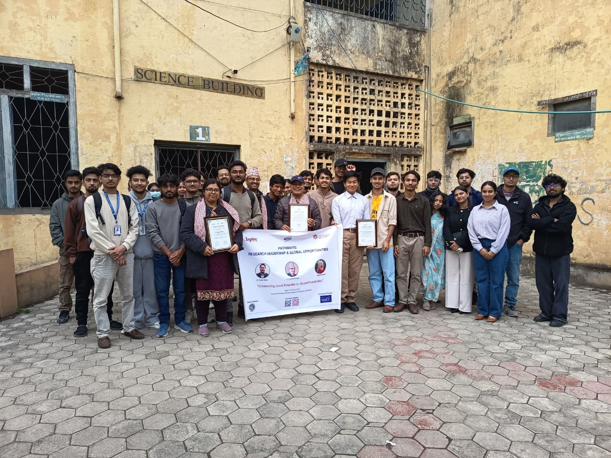
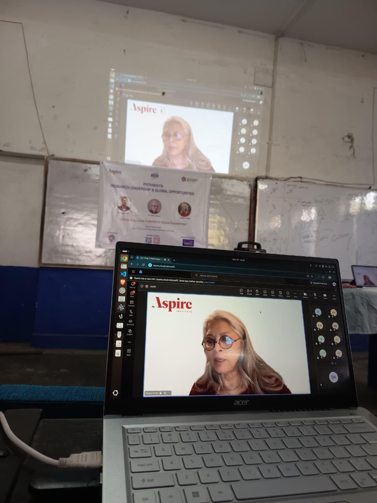
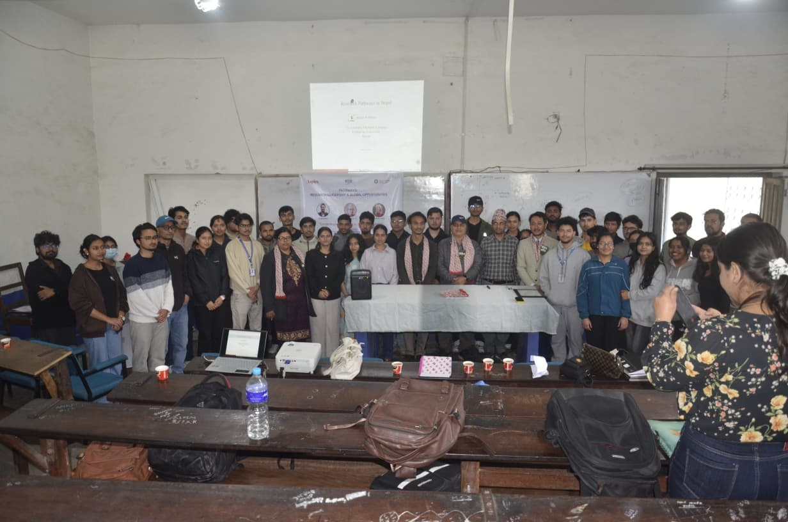
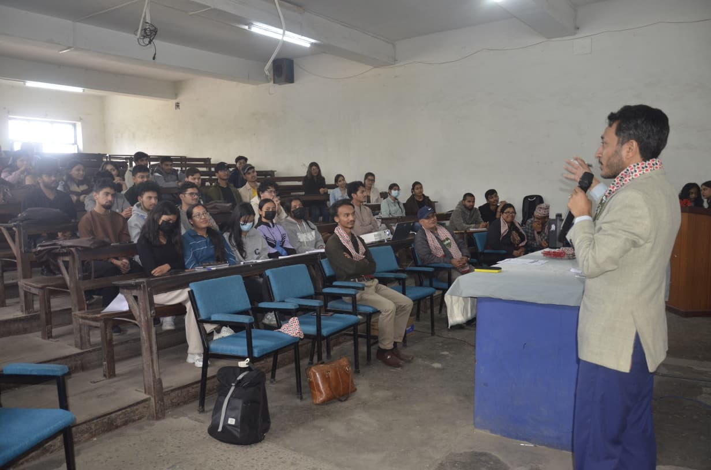

Genomics & Public Health
Mapping Nepal's Genomic Landscape
A nationwide initiative sequencing pathogen genomes to strengthen disease surveillance and inform evidence-based health policy.
Read the studyNSSR believes research should be open to everyone. We stand with students by helping them find the guidance, mentorship, skills, and support they need to pursue meaningful research.
We support students in two ways: Research Pathways offers a recurring, multidisciplinary route for exploring ideas and meeting researchers, while the NSSR Summer Research Fellowship provides a structured program for developing research from question to presentation and publication.
A curated view of the questions, methods, and voices shaping student-led research across Nepal and beyond.
A nationwide initiative sequencing pathogen genomes to strengthen disease surveillance and inform evidence-based health policy.
Read the study
Long-term remote sensing and field studies reveal unprecedented ice loss rates, with implications for water security across South Asia.
Explore findings
Student researchers deploy computer vision on multispectral imagery to forecast harvests and guide smallholder decisions in real time.
View methodology
Mixed-methods study tracing how Nepali students abroad transfer skills, networks, and capital back to domestic research ecosystems.
Read the paper
Novel encapsulation techniques developed by undergraduate teams boost stability under high-UV, freeze-thaw cycling.
See the dataA monthly, multidisciplinary initiative where students explore one research field, meet researchers online and in person, share ideas, receive feedback, and find potential collaborators.
No image is needed here. The pathway is built around conversation, ideas, and participation.
Explore PathwaysA structured three-month fellowship guiding students through research foundations, collaborative implementation, scientific writing, and a final symposium.
View FellowshipResearch is the bridge between what we know and what we must discover to build a better Nepal.